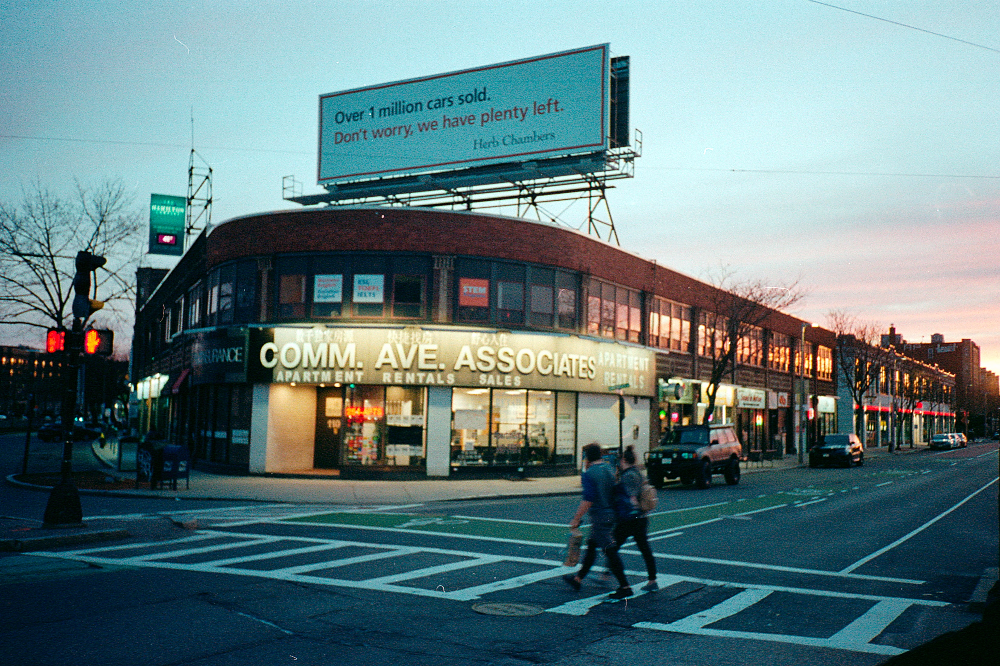

만약 누군가 나에게 한동에서의 삶에서 나를 가장 성장하게 만든 것이 무언이냐고 묻는다면 채은이에게 차인 사건일 것이다. 이 사건을 통해 나는 인간관계가 무엇인지 다시 되돌아보게 되었으며,, 내가 지금까지 영위해온 대인관계 방식이 잘못되었음을 깨달았다.
채은이에게 차이지 않았다면 어땠을까? 과연 내가 고수해오던 대인관계 방식을 개선할 수 있었을까? 이렇게 생각하면 채은이에게 많이 감사하다. 나를 다시 돌아볼 수 있게 해줬기 때문이다. 그렇다고 채은이가 처음부터 고마웠던 것은 아니다. 억울했고 창피했고 화도 났다. 그러나 시간이 지나면서 깨닫기 시작했다. 이 일이 나를 성숙하게 만들었다는 것을.